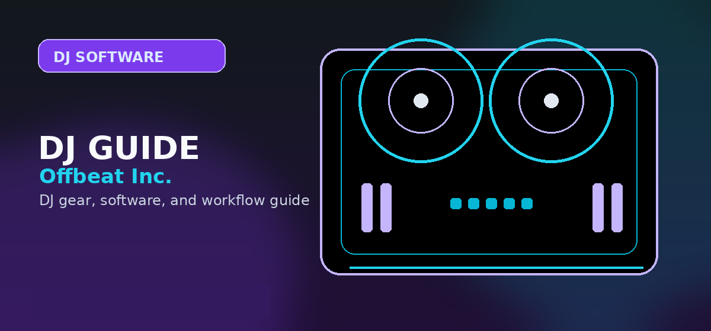

rekordbox Plans Review 2026: Free, Core, Creative and Professional
Compare rekordbox Free, Core, Creative, Professional, Hardware Unlock, USB export, STEMS and cloud options against the official 2026 plan information.

Disclosure: This page uses affiliate links. We may earn a commission at no extra cost to you. Full disclosure →
rekordbox has four official plans: Free, Core, Creative, and Professional. “Performance” is a software mode, not a paid subscription tier. You do not need a Professional subscription merely to prepare and export a compatible USB library. The real buying decision is whether you need specific laptop-performance, DVS, editing, STEMS, or cloud functions, and whether your exact hardware unlocks them. Confirm features against the official plan comparison before paying.
Start with Free and USB Export
The Free plan is useful for importing and analyzing locally owned tracks, organizing playlists, preparing cue points, and exporting to compatible DJ equipment. Export mode is not a Professional-only feature. For club USB preparation, check the target player's supported file systems and export formats; test the actual USB on the equipment before a show. If you only need a local library and compatible USB exports, start free rather than purchasing a subscription based on an invented tier.
Core, Creative, and Professional: Pay for Specific Features
The official US plan page lists Core at $120/year ($10/month equivalent), Creative at $180/year ($15/month equivalent), and Professional at $360/year ($30/month equivalent) when billed annually. Month-to-month billing is higher. Professional includes 5TB Dropbox cloud storage; Core and Creative have different feature entitlements. DVS, STEMS, video, editing, and cloud functions are not interchangeable across plans. Check the manufacturer's live feature matrix and your supported hardware before choosing; do not assume a higher tier improves basic USB export reliability.
Hardware Unlock Is Device-Specific
Some compatible DJ controllers and players unlock eligible rekordbox Performance-mode functions when connected, without a recurring subscription for those functions. That is not a perpetual, universal “full export license,” and it does not guarantee every paid-plan feature. Verify the official compatible-equipment table for the exact model, connection mode, and functions before buying. A hardware-unlocked setup and a cloud-storage subscription solve different needs.
STEMS, Library Sync, and Cloud Storage: What Is Actually Offered?
rekordbox advertises STEMS for manipulating separated musical parts and Cloud Library Sync for syncing library data across supported devices. The manufacturer's current features also include vocal-position analysis and Intelligent Cue Creation. The prior article attributed several unsupported names to AI analysis, priority cloud syncing, and automatic crates; those invented labels should not drive a purchase.
Cloud Library Sync supports linked Dropbox or Google Drive accounts where available. The separate Cloud Option offers 1TB Dropbox storage for eligible Free/Core/Creative setups; Professional includes 5TB Dropbox storage. A blanket free 10GB storage allowance is not supported by the official plan. Feature access, cloud-upload limits, and storage vary by plan and account, so review the official feature overview, Cloud Library Sync FAQ, and plan matrix rather than assuming instant syncing to every CDJ or automatic USB updates.
Official US Plan Comparison
| Plan | Annual payment | Monthly payment | What to check |
|---|---|---|---|
| Free | $0 | $0 | Local library preparation and compatible USB export; limited premium functions |
| Core | $120/year ($10/mo equivalent) | $12/mo | Required performance functions and supported devices |
| Creative | $180/year ($15/mo equivalent) | $18/mo | Additional creative, editing, and library features |
| Professional | $360/year ($30/mo equivalent) | $36/mo | 5TB Dropbox storage and expanded cloud/library features |
| Cloud Option | Separate add-on; varies by base plan | Separate add-on | 1TB Dropbox and eligible cloud functions for Free/Core/Creative |
| Hardware Unlock | No plan fee for eligible unlocked functions | Device purchase may be required | Exact device/function eligibility, not all paid-plan benefits |
USD pricing checked against the manufacturer's plan page on October 23, 2026; prices, taxes, and feature eligibility can change. Annual equivalents are not month-to-month charges.
Practical Strengths and Limitations
Strengths
- Free local-library preparation and supported USB export for compatible DJ players
- Track analysis, beatgrids, playlists, cue points, and hardware integration
- STEMS and Cloud Library Sync available with the appropriate plan and setup
- Eligible hardware can unlock specific Performance-mode functions
Check before paying
- Hardware Unlock eligibility is model- and feature-specific
- DVS, STEMS, editing, and cloud capabilities differ by plan
- Cloud storage and full-library synchronization may require a paid plan or Cloud Option
- USB media compatibility varies by player; verify exports before a gig
Key Facts
Quick Verdict
The standard for professional DJ library management — if you use Pioneer CDJs at clubs, Rekordbox is essential. DJs who only need compatible USB export should begin with the Free plan. Subscribe only when a specific feature is unavailable in Free or through eligible hardware. Shop Pioneer DJ DDJ-FLX4 on Amazon →
Shop on Amazon
Compare compatible controllers, then verify each model’s actual rekordbox Hardware Unlock functions on the manufacturer’s equipment list.
Who Should Use Which Option?
Preparing a USB for supported club players? Start with Free and test the export. Playing from a laptop? Check whether your controller unlocks the necessary Performance-mode functions. Using DVS, editing, STEMS, or cloud storage? Compare exact entitlements in Core, Creative, Professional, and Cloud Option before subscribing.
- Best first step: test the free local-library and USB workflow
- Before paying: verify supported hardware and the current official feature matrix
- Before a gig: validate your media and an offline fallback on the intended player
Free, Paid Plans, and Hardware Unlock
Free is a practical starting point for local track preparation and compatible USB export. Core, Creative, and Professional add different capabilities, while eligible Hardware Unlock devices can activate specific functions without a plan. Do not confuse Performance mode with a nonexistent Performance subscription.
For DVS, STEMS, effects, recording, cloud sync, or editing, check the exact feature row in the official plan comparison and the compatible-device matrix. These features are not guaranteed in every paid tier or with every controller.
Before buying a controller: confirm the exact model's Hardware Unlock functions and compatibility, not just its brand.
Library Management: The "Prepare, Don't Panic" Workflow
Rekordbox is fundamentally a database manager. The biggest mistake new users make is treating it like a media player rather than a library preparation tool. To ensure a smooth set on professional CDJ-3000s, follow this workflow:
- Analysis: Always run "Track Analysis" on import. Ensure your BPM and Key are set correctly to utilize the CDJ's "Sync" and "Key Shift" functions.
- Grid Correction: For tracks with variable tempos or live drumming, manually adjust the beatgrid. The CDJ-3000 relies on these grids for perfect quantized looping.
- Memory Cues vs. Hot Cues: Use Memory Cues for navigation points (Intro, Drop, Outro) on CDJs, and Hot Cues for performance triggers.
- The Export Workflow: Always "Sync" your playlists to your USB drive using the Export mode. Do not simply drag and drop files; the database file (.pdb) created during sync is what allows the CDJ to display waveforms and search your library.
CDJ/XDJ Connectivity: From Laptop to Booth
Rekordbox is the bridge between your bedroom studio and the festival stage. There are three primary ways to connect your library to Pioneer hardware:
The USB Export Method
This is the gold standard. Export your analyzed library to USB media in a format supported by the exact CDJ/XDJ model you will use. Compatibility varies across players and file systems; confirm waveforms, cue points, playlists, and playback on the intended device before a show.
Pro DJ Link (LAN Connection)
If you are using a laptop, you can connect it to your CDJs via a LAN switch or a direct Ethernet cable. This creates a "Pro DJ Link" network. It allows you to drag tracks directly from your laptop's Rekordbox collection onto the CDJ screens. This is essential for large libraries that won't fit on a single USB drive.
USB/HID Control
By connecting your laptop via USB to a supported player (like the XDJ-XZ), you can use the hardware as a high-end MIDI controller for Rekordbox. This gives you the best of both worlds: the tactile feel of physical jog wheels and the massive software-based library management of Rekordbox.
Official rekordbox references
Frequently Asked Questions
Is Rekordbox Pro worth the subscription?
The Free plan supports library preparation and compatible USB export. Paid plans are Core, Creative, and Professional; compare STEMS, DVS, streaming, and cloud entitlements in the official plan matrix before subscribing.
What is the difference between Rekordbox free and paid?
rekordbox offers Free, Core, Creative, and Professional plans. The official US annual-billing equivalents are $0, $10, $15, and $30 per month respectively; Performance is a software mode, not a subscription plan.
Does Rekordbox work without internet?
Local files and compatible USB exports can be used without streaming. Account activation, subscription checks, cloud features, and streaming may need connectivity; verify your exact offline workflow before a gig.
Is Rekordbox the best DJ software in 2026?
rekordbox is a strong choice for supported CDJ/XDJ export workflows, but the right DJ software depends on your equipment, library needs, performance style, and compatible features.
Can you export Rekordbox playlists to a USB drive?
Yes. The Free plan supports Export mode for compatible DJ hardware. Check your player's supported USB format and export settings, and test the device before a performance.